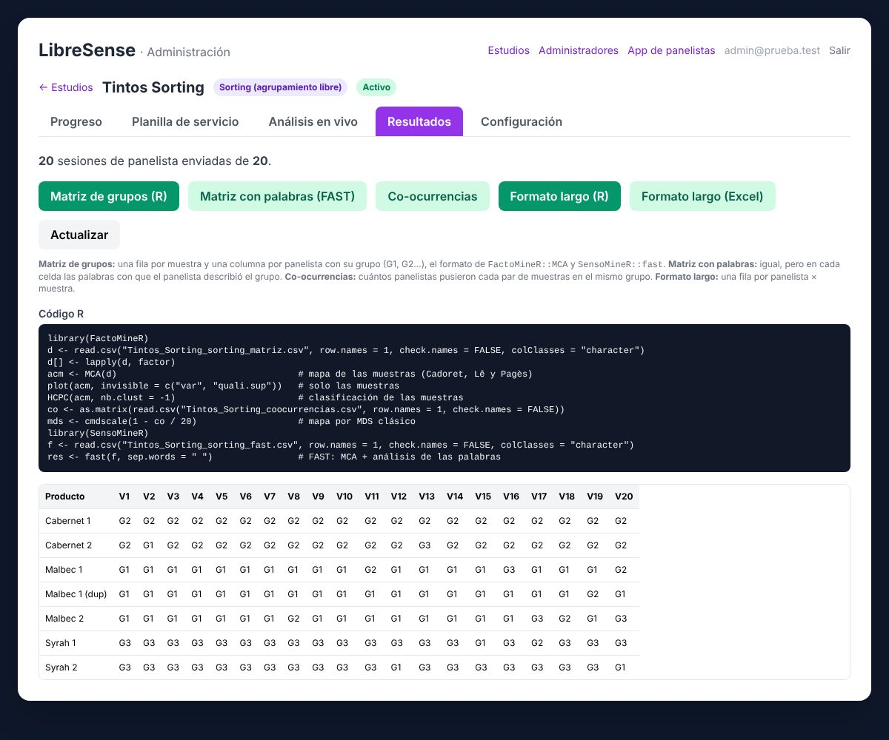
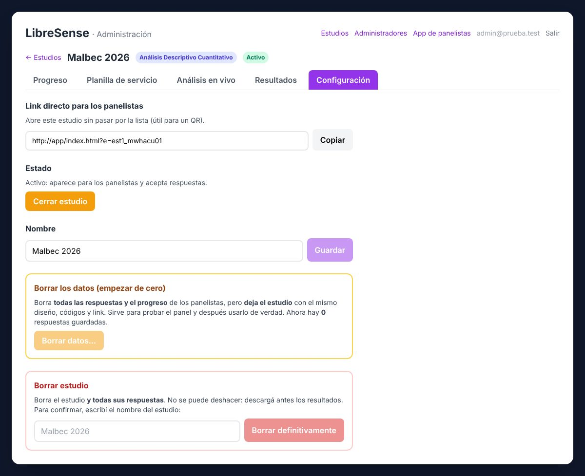

Este capítulo resume las ideas que se repiten en todas las técnicas. No reemplaza a un curso de estadística, pero alcanza para leer con criterio lo que muestra la app.
Significancia: el valor p
El valor p responde a la pregunta: si en realidad los vinos fueran iguales, ¿qué tan probable sería ver diferencias como las observadas, solo por azar?
Cuando p es chico (por convención, menor que 0,05) se dice que la diferencia es significativa. La app usa la notación habitual:
Símbolo
*** p < 0,001
** p < 0,01
* p < 0,05
· p < 0,10
ns no significativo
Significativo no es lo mismo que importante. Con muchos consumidores, una diferencia de 0,2 puntos en la escala de agrado puede ser significativa y no tener ninguna importancia práctica.
No significativo no prueba que sean iguales: puede que falten panelistas o que el panel no sea consistente.
Al comparar muchos pares a la vez, aparecen diferencias “significativas” por azar. Por eso existen los ajustes (Tukey, Holm, Bonferroni).
Letras de comparaciones de a pares
Las letras (a, b, c…) resumen qué vinos difieren entre sí: dos vinos que no comparten ninguna letra difieren significativamente; si comparten alguna, no.
Por ejemplo, con A = “a”, B = “ab” y C = “b”: A y C difieren, pero B no difiere de ninguno de los dos. La “a” la lleva el vino con el valor más alto.
Mapas: PCA, AFM, correspondencias, MCA, DISTATIS
Todas las técnicas terminan en un mapa de dos dimensiones que resume una tabla más grande. Las reglas para leerlos son las mismas:
Los vinos cerca entre sí se parecen (en sus atributos, en cómo los ordenaron o agruparon los panelistas).
El % de cada eje (“Dim 1 (47,5%)”) indica cuánta de la información total resume. Si las dos primeras dimensiones juntan poco (menos del 50–60%),
conviene mirar también la dimensión 3 (las apps de R permiten elegir 1-3 o 2-3).
El signo de los ejes es arbitrario: un mapa espejado es el mismo mapa. Por eso los gráficos tienen la opción “Invertir Dim 1 / Dim 2”, para que coincida con el de R o con uno anterior.
Flechas (PCA, AFM): señalan hacia dónde aumenta un atributo. Su largo indica qué tan bien está representado en ese plano; una flecha corta casi no tiene que ver con esas dimensiones.
Términos y palabras (correspondencias, Napping, Sorting): se ubican cerca de los vinos que más describen.
Interpretá los grandes patrones (grupos de vinos, oposiciones a lo largo del eje 1), no distancias chicas.
Método
Dónde aparece
Qué hace
PCA
ADC, RATA
Resume la tabla vinos × atributos (medias), estandarizada.
AFM / MFA
Perfil Flash, Napping
Combina las tablas de todos los panelistas dándole a cada uno el mismo peso máximo, aunque usen distinta cantidad de descriptores.
GPA
Perfil Flash (Shiny)
Rota y escala el mapa de cada panelista para que se parezca lo más posible al de consenso.
Correspondencias (CA)
CATA
Resume la tabla de frecuencias vinos × términos.
MCA
Sorting (Shiny)
Trata a cada panelista como una variable categórica cuyas categorías son sus grupos.
DISTATIS
Sorting (Shiny)
Combina una matriz de distancias por panelista, dándole más peso a los que coinciden con el resto.
MDS
Sorting
Ubica los vinos para que sus distancias reflejen cuán seguido no se agruparon juntos.
Elipses de confianza
Las elipses (en las apps de R) muestran cuánto se movería cada vino en el mapa si se repitiera el estudio con otros panelistas parecidos. Se calculan armando cientos de
“paneles virtuales” por sorteo. Dos vinos cuyas elipses no se superponen fueron diferenciados por el panel; si se superponen mucho, el panel no los distinguió con claridad.
Elipses grandes en general indican un panel poco consistente o pocas personas.
Los panelistas
RV (de 0 a 1): parecido entre dos configuraciones. El RV de un panelista con el consenso dice cuánto coincide con el panel; uno muy bajo puede usar otro criterio, no haber entendido la tarea o tener un problema (por ejemplo, anosmia a algún compuesto).
Duplicados: un panelista consistente trata al duplicado igual que a su original (cerca en el mapa, en el mismo grupo, con rangos parecidos).
Antes de descartar a alguien, mirá su mapa individual: a veces percibe algo real que el resto no.
¿Cuántos datos hacen falta?
Técnica
Mínimo razonable
Recomendado
ADC
8 panelistas entrenados, 2 repeticiones
10–12, 3 repeticiones
RATA
12–15 (entrenados) o 50 (consumidores)
20+ o 100
CATA con aceptabilidad
50 consumidores
100 o más (más aún para segmentar)
Perfil Flash
4–5 panelistas
8–10
Napping
10 panelistas
15–30
Sorting
15 panelistas
20–30 o más
13Resultados, descargas y R
La pestaña Resultados
Tiene todas las respuestas, con el nombre real del vino y la repetición (que el panelista no ve), listas para descargar:
CSV para R: separador coma y punto decimal (se lee con read.csv).
CSV para Excel en español: separador punto y coma y coma decimal (se abre con doble clic en un Excel configurado en español).
Según la técnica, además: formato largo, matrices listas para FactoMineR/SensoMineR (AFM, MCA, FAST), tabla de co-ocurrencias, palabras para análisis textual
y un bloque de código R para correr el análisis con esos archivos.

Resultados de un Sorting: descargas, código R y la matriz de grupos.
Las columnas comunes son: Estudio, Sesion, Valuador (V1, V2…), Orden (posición en que se sirvió), NombreProducto (el vino real), Rep, CodigoProducto y timestamp.
En ADC y RATA sigue una columna por atributo; en CATA, Aceptabilidad y una columna por término (las filas con NombreProducto = IDEAL son el ideal de cada consumidor).
Análisis completo en R (Shiny)
RATA, Perfil Flash, Napping, CATA y Sorting tienen una app de R publicada en shinyapps.io. Se abre con el botón Análisis completo en R (Shiny) ↗ en Análisis en vivo o en Resultados.
Cómo llegan los datos: la administración le pasa a la app de R, y solo a esa ventana, la sesión del administrador. La app de R lee el estudio directamente de la base de datos, con los mismos permisos.
Por eso hay que abrirla con el botón (no copiando la dirección) y con el estudio abierto en la administración. El botón “Actualizar datos” vuelve a leer las respuestas nuevas.
Sin conexión con la app: todas las apps de R aceptan también el CSV descargado de Resultados (“…o subí un archivo”).
Cada app tiene una pestaña Datos con controles, los análisis de la técnica, Descargas (gráficos en PNG, Excel con todas las tablas, informe en Word o HTML, código R equivalente) y Ayuda.
La primera vez tarda
En el plan gratuito de shinyapps.io las apps se “duermen” cuando nadie las usa. La primera apertura puede tardar 20–40 segundos.
Si aparece “Disconnected from the server”, recargá la página o volvé a tocar el botón en la administración. El plan gratuito tiene además un límite de horas de uso por mes.
Publicar o actualizar las apps de R
Cuando hay una versión nueva de una app de R (o para publicarla por primera vez), se hace desde RStudio, con la cuenta de shinyapps.io ya configurada
(rsconnect::setAccountInfo, una sola vez; el token y el secreto se copian desde shinyapps.io → Account → Tokens y no se comparten con nadie):
d <- path.expand("~/libresense_app"); z <- tempfile(fileext = ".zip")
download.file("https://github.com/anibalacatania/libresense/archive/refs/heads/main.zip", z, mode = "wb")
unzip(z, exdir = d, overwrite = TRUE)
# una línea por app que se quiera publicar o actualizar:
rsconnect::deployApp(file.path(d, "libresense-main/shiny/perfilflash"), appName = "perfilflash", account = "acatania")
rsconnect::deployApp(file.path(d, "libresense-main/shiny/napping"), appName = "napping", account = "acatania")
rsconnect::deployApp(file.path(d, "libresense-main/shiny/cata"), appName = "cata", account = "acatania")
rsconnect::deployApp(file.path(d, "libresense-main/shiny/sorting"), appName = "sorting", account = "acatania")
rsconnect::deployApp(file.path(d, "libresense-main/shiny/rata"), appName = "rata", account = "acatania")
Si R pide actualizar paquetes, conviene aceptar. Si un paquete no compila, actualizarlo primero con install.packages() y volver a publicar.
14Configuración y buenas prácticas

Configuración de un estudio.
Opción
Qué hace
Link directo y código QR
Dirección que abre ese estudio sin pasar por la lista, y su código QR (descargable como imagen o en una hoja para imprimir).
Código de acceso
Pedir (o dejar de pedir) un código para entrar al estudio, verlo y cambiarlo.
Cerrar / reabrir estudio
Cerrado: no aparece a los panelistas y no acepta respuestas. Los datos se conservan.
Nombre
Cambia el nombre que ven los panelistas.
Borrar los datos (empezar de cero)
Borra todas las respuestas y el progreso, pero deja el estudio con su diseño y sus códigos. Hay que escribir BORRAR para confirmar. Los dispositivos de los panelistas también se reinician.
Borrar estudio
Borra el estudio y todas sus respuestas, sin vuelta atrás. Hay que escribir el nombre del estudio para confirmar.
Buenas prácticas
Probá el estudio antes: entrá como panelista desde un celular, hacé una sesión completa y mirá el análisis en vivo y los resultados. Después, Borrar los datos y queda listo para la evaluación real.
Imprimí la planilla de servicio y anotá qué persona tiene cada número de panelista.
Antes de servir, revisá el código de cada copa contra la planilla: un error de servicio no se puede corregir después.
Mirá el progreso antes de dejar ir a los panelistas: que cada sesión esté en verde.
Descargá el CSV al terminar cada estudio y guardalo junto con la planilla. Es el respaldo de los datos.
Cerrá el estudio cuando termine, para que nadie agregue respuestas por error.
Para un estudio nuevo con el mismo diseño, conviene crear otro estudio (con la misma semilla si se quiere el mismo diseño) en lugar de borrar los datos de uno ya usado.
Límites del plan gratuito
La base de datos usa el plan gratuito de Firebase, que permite decenas de miles de lecturas y escrituras por día:
de sobra para un laboratorio (cada muestra evaluada es una escritura). El límite se reinicia todos los días.
15Preguntas frecuentes
Un panelista no ve el estudio.
Revisá que esté activo (Configuración). Si lo tenía abierto desde antes, que recargue la página. Si hay varios estudios activos, que elija el correcto, o mandale el link directo.
Un panelista dice que el código no funciona.
Revisá en Configuración el código vigente (si lo cambiaste, el viejo deja de servir). Se escriben sin importar mayúsculas ni espacios; los caracteres que se confunden (0/O, 1/I/L) no se usan en los códigos que propone la app.
Un panelista dice que se le cortó internet.
Puede seguir: las respuestas quedan en el dispositivo y se suben solas. Que no borre los datos del navegador ni cambie de navegador hasta que el indicador diga “Todo guardado en la nube”.
Un panelista eligió el número equivocado.
Si todavía no envió nada, que toque “Cambiar” y elija el correcto. Si ya envió muestras con otro número, esas respuestas quedan con ese número: anotalo y corregilo en el CSV antes del análisis
(o, si fue en una prueba, usá “Borrar los datos”).
Me equivoqué en el diseño (vinos, cantidad de panelistas, atributos).
El diseño no se edita una vez creado, porque los códigos ya pueden estar impresos o servidos. Creá un estudio nuevo con los datos corregidos y borrá el anterior.
¿Puedo agregar panelistas a un estudio en curso?
No a un estudio creado. Conviene crear el estudio con algunos puestos de más (por ejemplo 16 si esperás 13); los que no se usen simplemente no tienen respuestas.
El análisis en vivo y el de R dan mapas espejados.
Es normal: el signo de los ejes es arbitrario. Usá “Invertir Dim 1/Dim 2”.
La app de R dice que no tiene permiso.
La sesión del administrador vence a la hora (la administración la renueva sola mientras está abierta). Volvé a abrir el análisis con el botón desde la administración.
Si sos administrador “solo sus estudios”, solo podés abrir los estudios que creaste.
Quiero que otra persona vea los resultados sin poder tocar nada.
Descargale el CSV o el Excel / informe de la app de R. Darle acceso de administrador le permite modificar sus propios estudios, pero no los tuyos si es administrador “solo sus estudios”.
¿Se puede usar para otra cosa que vinos?
Sí: los textos dicen “vinos” y “copas”, pero los nombres de las muestras son libres. Funciona igual para cerveza, aceite de oliva, quesos o cualquier producto.
16Glosario y bibliografía
AFM / MFA
Análisis Factorial Múltiple: combina varias tablas de las mismas muestras (una por panelista) en un mapa de consenso.
ANOVA
Análisis de la varianza: prueba si las medias de los vinos difieren más de lo esperable por azar, descontando las diferencias entre panelistas.
Bootstrap
Repetir un cálculo muchas veces sorteando panelistas con reposición, para ver cuán estable es un resultado.
CATA / RATA
Check-All-That-Apply / Rate-All-That-Apply: marcar todos los términos que corresponden (y, en RATA, su intensidad).
Co-ocurrencia
En Sorting, cantidad de panelistas que pusieron dos muestras en el mismo grupo.
Consenso
Configuración de las muestras que resume a todo el panel.
Duplicado
Muestra servida dos veces en la misma sesión, con otro código, para medir la consistencia del panelista.
Escala hedónica
Escala de agrado de 9 puntos, de “Me disgusta muchísimo” (1) a “Me gusta muchísimo” (9).
Inercia (%)
Parte de la información total que resume cada dimensión de un mapa.
McNemar / Q de Cochran
Pruebas para datos 0/1 de los mismos consumidores: McNemar compara dos productos, Cochran compara todos a la vez.
Penalidad
Cuánto baja el agrado cuando un término falta o sobra respecto del ideal (o cuando se marca vs. no se marca).
Rango
En Perfil Flash, la posición de una copa en el ordenamiento de un descriptor (1 = menos intensa). Empates: rango promedio.
RV
Coeficiente de 0 a 1 que mide el parecido entre dos configuraciones de las mismas muestras.
Semilla
Número que fija el sorteo del diseño y los códigos, para poder reproducirlo.
Tukey
Prueba de comparaciones de a pares entre medias que controla el error al hacer muchas comparaciones.
Williams (diseño)
Orden de presentación balanceado: cada muestra aparece en cada posición y sigue a cada otra la misma cantidad de veces.
Bibliografía
Varela, P. y Ares, G. (eds.) (2014). Novel Techniques in Sensory Characterization and Consumer Profiling. Boca Raton: CRC Press. En particular: cap. 7, Flash profile (J. Delarue);
cap. 8, Free sorting task (S. Chollet, D. Valentin y H. Abdi); cap. 9, Projective mapping and Napping (C. Dehlholm); cap. 11, Check-all-that-apply questions (M. Meyners y J. C. Castura).
Ares, G. y Jaeger, S. R. (2015). Check-all-that-apply (CATA) questions with consumers in practice: experimental considerations and impact on outcome. En Delarue, J., Lawlor, J. B. y Rogeaux, M. (eds.), Rapid Sensory Profiling Techniques, cap. 11. Woodhead Publishing.
Ares, G., Dauber, C., Fernández, E., Giménez, A. y Varela, P. (2014). Penalty analysis based on CATA questions to identify drivers of liking and directions for product reformulation. Food Quality and Preference, 32, 65–76.
Meyners, M., Castura, J. C. y Carr, B. T. (2013). Existing and new approaches for the analysis of CATA data. Food Quality and Preference, 30, 309–319.
Meyners, M., Jaeger, S. R. y Ares, G. (2016). On the analysis of Rate-All-That-Apply (RATA) data. Food Quality and Preference, 49, 1–10.
Abdi, H., Valentin, D., Chollet, S. y Chrea, C. (2007). Analyzing assessors and products in sorting tasks: DISTATIS, theory and applications. Food Quality and Preference, 18, 627–640.
Cadoret, M., Lê, S. y Pagès, J. (2009). A factorial approach for sorting task data (FAST). Food Quality and Preference, 20, 410–417.
Cadoret, M. y Husson, F. (2013). Construction and evaluation of confidence ellipses applied at sensory data. Food Quality and Preference, 28, 106–115.
Dehlholm, C., Brockhoff, P. B., Meinert, L., Aaslyng, M. D. y Bredie, W. L. P. (2012). Rapid descriptive sensory methods: Comparison of Free Multiple Sorting, Partial Napping, Napping, Flash Profiling and conventional profiling. Food Quality and Preference, 26, 267–277.
Hopfer, H. y Heymann, H. (2013). A summary of projective mapping observations: the effect of replicates and shape, and individual performance measurements. Food Quality and Preference, 28, 164–181.
Williams, E. J. (1949). Experimental designs balanced for the estimation of residual effects of treatments. Australian Journal of Scientific Research, A2, 149–168.
Lê, S., Josse, J. y Husson, F. (2008). FactoMineR: an R package for multivariate analysis. Journal of Statistical Software, 25(1), 1–18. · Lê, S. y Husson, F. (2008). SensoMineR: a package for sensory data analysis. Journal of Sensory Studies, 23, 14–25.
LibreSense fue desarrollada por Aníbal Catania (anibalacatania@gmail.com). Es software libre. El código de la app y de las apps de R está en github.com/anibalacatania/libresense.